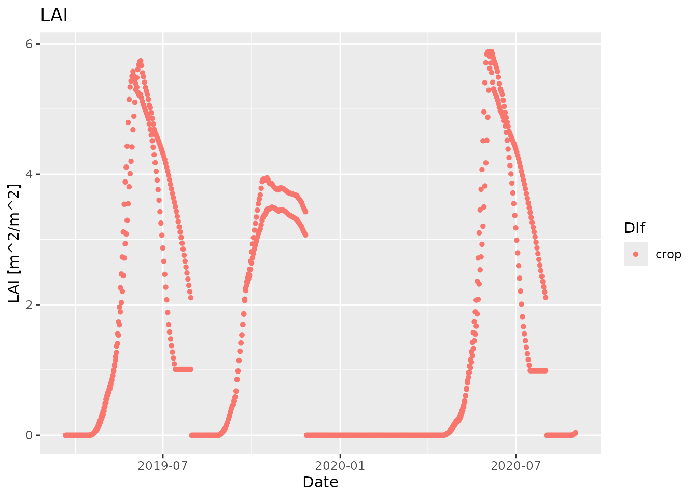
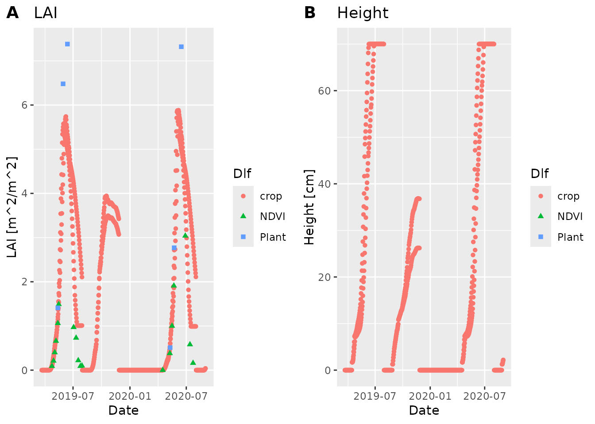

Compare simulated and measured data
compare-simulated-and-measured-data.RmdWe are going to read and plot some measured and simulated data, so we can visualize how well the simulated data match the measured data.
Read, prepare and visualize measured data
We use the LAI field measurements from part 3 of the daisy course,
which is bundled with daisyrVis
data_dir <- system.file("extdata", package="daisyrVis")
field_path <- file.path(data_dir, "daisy-course/03/field_LAI.csv")
field <- read.csv(field_path)
head(field)
#> Date year month day Nitrogen_Level Method NDVI_mean
#> 1 2019-04-23 22:00:00 UTC 2019 4 23 160 NDVI_sensor 0.29
#> 2 2019-04-28 22:00:00 UTC 2019 4 28 160 NDVI_sensor 0.40
#> 3 2019-05-02 22:00:00 UTC 2019 5 2 160 NDVI_sensor 0.54
#> 4 2019-05-06 22:00:00 UTC 2019 5 6 160 NDVI_sensor 0.67
#> 5 2019-05-12 22:00:00 UTC 2019 5 12 160 NDVI_sensor 0.79
#> 6 2019-05-15 22:00:00 UTC 2019 5 15 160 NDVI_sensor 0.85
#> NDVI_SE NDVI_CL_lower NDVI_CL_Upper LAI_mean LAI_SE LAI_CL_lower LAI_CL_upper
#> 1 0.01 0.28 0.30 0.09 NA 0.08 0.10
#> 2 0.01 0.38 0.43 0.21 NA 0.18 0.25
#> 3 0.02 0.50 0.58 0.40 NA 0.34 0.47
#> 4 0.02 0.63 0.71 0.66 NA 0.56 0.78
#> 5 0.01 0.75 0.83 1.06 NA 0.89 1.30
#> 6 0.01 0.82 0.87 1.49 NA 1.29 1.78The csv file contains measurements obtained with two methods,
NDVI_sensor and Plant_sample, at two nitrogen
levels, 0 and 160. We want to include both methods, but only nitrogen
level 160.
field <- field[field$Nitrogen_Level == 160, ]In order to get proper handling of the dates when plotting, we need
to convert the datetime strings to POSIXct objects
field$Date <- as.POSIXct(field$Date, "%Y-%m-%d %H:%M:%S", tz="utc")For the field data we will directly use ggplot2 to get a
quick visualization.
ggplot(data=field, mapping=aes(x=Date, y=LAI_mean, group=Method, color=Method,
shape=Method)) + geom_point()
#> Warning: Removed 7 rows containing missing values or values outside the scale range
#> (`geom_point()`).Read, prepare and visualize simulated data
We use simulated LAI measurements from part 3 of the daisy course,
which is bundled with daisyrVis.
sim_dir <- file.path(data_dir, "daisy-course/03/Output")
sim <- read_dlf_dir(sim_dir, pattern="crop\\.csv")
names(sim)
#> [1] "New/crop" "Olde/crop"
head(sim[[names(sim)[1]]]@data)
#> year month mday hour DS Height LAI Depth WLeaf WDead WStem WSOrg WRoot
#> 1 2019 3 22 0 0 0 0 0 0 0 0 0 0
#> 2 2019 3 23 0 0 0 0 0 0 0 0 0 0
#> 3 2019 3 24 0 0 0 0 0 0 0 0 0 0
#> 4 2019 3 25 0 0 0 0 0 0 0 0 0 0
#> 5 2019 3 26 0 0 0 0 0 0 0 0 0 0
#> 6 2019 3 27 0 0 0 0 0 0 0 0 0 0
#> Fixated NLeaf NDead NStem NSOrg NRoot water_stress nitrogen_stress Phenology
#> 1 0 0 0 0 0 0 0 0 0
#> 2 0 0 0 0 0 0 0 0 0
#> 3 0 0 0 0 0 0 0 0 0
#> 4 0 0 0 0 0 0 0 0 0
#> 5 0 0 0 0 0 0 0 0 0
#> 6 0 0 0 0 0 0 0 0 0There are two simulations Olde/crop and
New/crop. Hopefully we will see a better fit to field data
for the new one.
We again need to represent datetime with POSIXct
objects
sim <- daisy_time_to_timestamp(sim, "Date")
head(sim[[names(sim)[1]]]$Date)
#> [1] "2019-03-22 UTC" "2019-03-23 UTC" "2019-03-24 UTC" "2019-03-25 UTC"
#> [5] "2019-03-26 UTC" "2019-03-27 UTC"For the simulated data we will use the plot function
plot_dlf from daisyrVis, which knows how to
plot multiple variables from multiple Dlf objects
together.
plot_dlf(sim, "Date", "LAI", "points")
#> [[1]]
Visualize simulated and measured data together
We can combine the simulated and measured data in one plot by first plotting the simulated data and then adding the measured data
plot_dlf(sim, "Date", "LAI", "points") +
geom_point(data=field, mapping=aes(x=Date, y=LAI_mean, group=Method,
fill=Method, color=Method, shape=Method))
#> NULLThis works because plot_dlf returns a
ggplotobject that we can add additional data and plots to.
Note that this only works when you plot a single variable. If you use
point_and_lines to plot multiple variables in different
subplots, then you need to do things a bit differently.
Visualize simulated and measured data together for multiple variables
In order to plot multiple variables from different sources, we need
to have everything as Dlfobjects using the same column
names
ndvi <- field[field$Method == "NDVI_sensor", c("Date", "LAI_mean")]
plant <- field[field$Method == "Plant_sample", c("Date", "LAI_mean")]
field_dlfs <- list(
NDVI=new("Dlf", header=list(info="Measured field data (NDVI sensor)"),
units=data.frame(Date="", LAI="", Height="cm"),
data=data.frame(Date=ndvi$Date, LAI=ndvi$LAI_mean,
Height=rep(NA, nrow(ndvi)))),
Plant=new("Dlf", header=list(info="Measured field data (Plant samples)"),
units=data.frame(Date="", LAI="", Height="cm"),
data=data.frame(Date=plant$Date, LAI=plant$LAI_mean,
Height=rep(NA, nrow(plant)))))
plot_dlf(c(sim, field_dlfs), "Date", c("LAI", "Height"), "points")
#> Warning: Removed 7 rows containing missing values or values outside the scale range
#> (`geom_point()`).
#> Warning: Removed 31 rows containing missing values or values outside the scale range
#> (`geom_point()`).
# nolint end